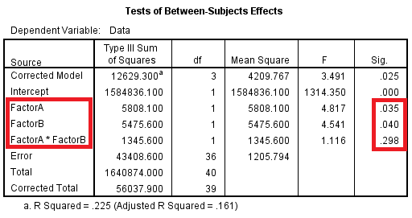

STAT 301
Lab 9: Two-Way ANOVA
T.A.: Yixuan Qiu
What's Two-way ANOVA?
- The purpose is similar to One-way ANOVA, but now we have two factors.
- Example: Is the amount of weekly physical activity of college students different in three states for male and female?
- Two factors: state, gender.
What we want to test?
- Main effect
- Will the state influence the amount?
- Will gender influence the amount?
- Interaction
- Is the influence of state the same for male and female?
How do you know whether there is interaction?
- If any lines cross each other, then you have an interaction.
- If the lines are all fairly parallel to each other, then you do not have an interaction.
- If the lines aren't parallel but don't cross each other either, then you might have an interaction.

Check the assumption
- Need independent SRSs
- Population should be Normal with the same standard deviation
- Largest std. < 2 * smallest std.
Interpret the result
